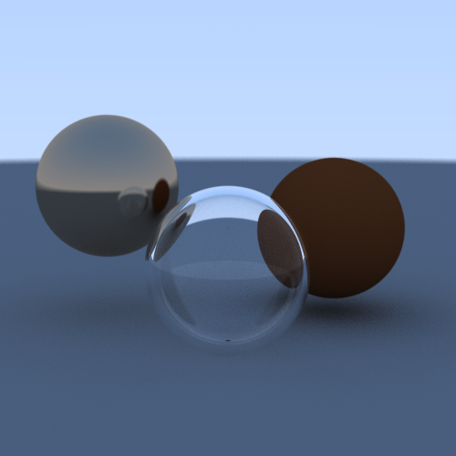

Computer Science student experienced in building software projects in Python and C++, including web publishing automation, game development, and multithreaded graphics programming. Strong foundation in software processes, architecture, design patterns, documentation, algorithms, data structures, version control and mathematics.
View ResumeAn automated personal knowledge-base pipeline that converts Markdown notes written in Obsidian into a published website using MkDocs, Python, and LaTeX with an automated backup workflow using Google Drive, GitHub, and GitLab to provide redundant storage and reduce risk of data loss from hardware or power failures.
A puzzle game engine in Python using a layered architecture, applying the Observer and Strategy design patterns to decouple game logic (event & input handling with time slicing) from the UI (made with Pygame), resources (data structures and algorithms to operate on them) and persistent data (a JSON and SQLite-backed database to store game state and user data).
A multi-threaded ray tracing renderer in C++ that distributes pixel computation across a configurable number of threads, shows the result on a SFML window and saves it in a PNG file. Renderer has a JSON-driven configuration system covering four parameter groups — scene objects (size, color, material, position), camera (position, orientation, focal length), image output (dimensions, samples per pixel), and thread count — so scenes can be re-rendered without touching code.
A tex template to generate PDFs in dark mode, with different parameters to customize colors of code blocks, headings, page, text and links.
zaiddadev@gmail.com
Call to Action